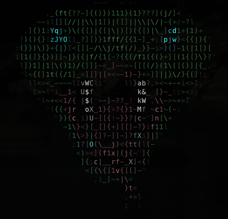
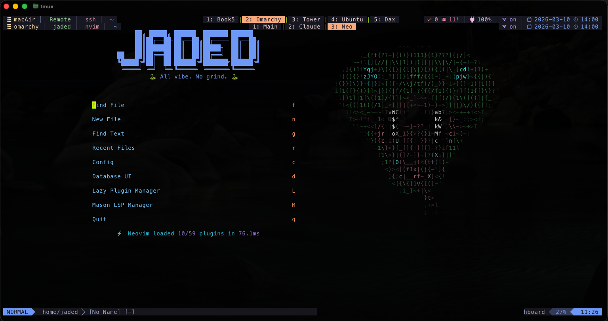

JADED
All vibe. No grind.
Vibe coder. Homelab tinkerer. AI-driven development.
In 2026, coding is a conversation.
This entire site was built through dialogue with AI.
No boilerplate. No templates. Just vibes.
I don't fight the tools — I flow with them.
Homelab tinkerer. Automation obsessive.
Building things that work while I sleep.
Projects
nvimConfig
Modern Neovim config with LSP, Tree-sitter, 59 plugins, and AI-assisted coding. Dracula theme with custom dashboard.
odooReports
Automated Odoo business reporting — AR/AP, inventory labels, COA extraction. Generates daily PDF/Excel reports with email distribution.
commandCenter
Unified terminal command center: ClickUp tasks, Gmail, SMS, and phone notifications — all in tmux.
COA Extractors
Certificate of Analysis data extraction pipeline. Pulls cannabinoid data from PDFs into Google Sheets for two brands.
OrphanedTasks
macOS menu bar app for capturing and tracking interrupted tasks. Built natively in Swift.
Loom SOP Pipeline
Converts Loom screen recordings into structured SOPs. Auto-downloads, transcribes, and generates documentation.
Stack

Editor
- Neovim
- lazy.nvim
- Dracula theme
- Ghostty terminal
Terminal
- tmux + sesh
- zsh + p10k
- fzf + zoxide
- lazygit
AI
- Claude Code
- GitHub Copilot
- Ollama
- n8n automations
Homelab
- Proxmox (2 nodes)
- Docker
- Twingate
- Pi-hole
Roadmap
Interactive Homelab Topology
SVG network map with clickable nodes and animated connections.
Turing Machine Easter Egg
Hidden binary counter widget. Can you find the trigger?
/now Page Content
Real-time status updates on current projects and focus areas.
Interactive Terminal
Live terminal emulator showcasing dotfiles and workflow.
Matrix Snek Animation
ASCII rain effect with the snek mascot. Full weirdness.
Blog / TIL
Short-form "Today I Learned" posts. Vibe-coded knowledge drops.